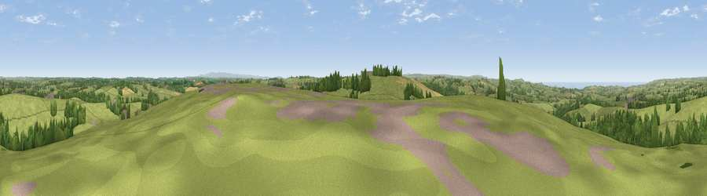

Viewpoint near Whitstone
#8675 in England · top 20% of its area beats it · near WhitstoneWhere it is
The exact computed spot (SX 26425 99725). Click the marker for map links.
The view, rendered

A 360° render of this exact spot computed from the terrain model, tree cover and land cover — summer colours, afternoon light, calibrated against photographs of famous viewpoints. Real trees, hedges and buildings will differ in detail.
The panorama
Grey silhouette: terrain skyline in each direction (720 bearings, Earth curvature and refraction included). Dashed green: skyline with trees (+15 m) and buildings (+8 m) as obstacles. Blue strip: how far the ground is visible on each bearing.
Where the view opens
Wedge length = distance to the farthest visible ground on that bearing (vegetation-aware). Rings at 10, 25 and 50 km.
What fills the view
79% grassland · 13% woodland · 5% cropland · 2% water ·
Angular shares of the visible panorama (visual magnitude), not map area. Landscape diversity 0.31 (0–1 Shannon).
Key numbers
More beautiful places nearby
The staircase of upgrades: each row has a higher view potential than everything closer. Driving times are estimates from straight-line distance, calibrated against real road routing — check an actual route before setting out.
| Place | Direction | Drive | Score |
|---|---|---|---|
| Viewpoint near Whitstone | SSW · 1 km | ~3 min | 69.4 |
| Viewpoint near Poundstock | W · 7 km | ~15 min | 70.0 |
| Viewpoint near Poundstock | W · 8 km | ~15 min | 76.0 |
| Viewpoint near Poundstock | W · 8 km | ~17 min | 79.7 |
| Viewpoint near Crackington Haven | W · 10 km | ~19 min | 81.8 |
| Viewpoint near Crackington Haven | WSW · 14 km | ~26 min | 88.1 |
| Viewpoint near Combe Martin | NNE · 59 km | ~81 min | 88.9 |
| Holdstone Hill | NE · 60 km | ~82 min | 90.2 |
50.77107, -4.46300 · source: screening · position refined by local search. Computed location — check access rights before visiting.